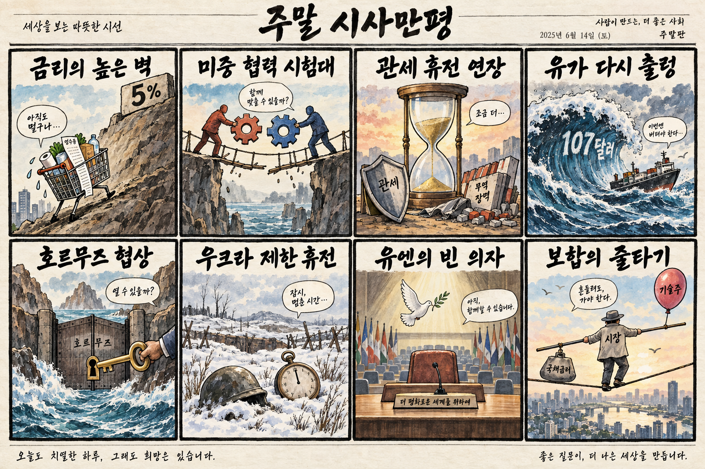
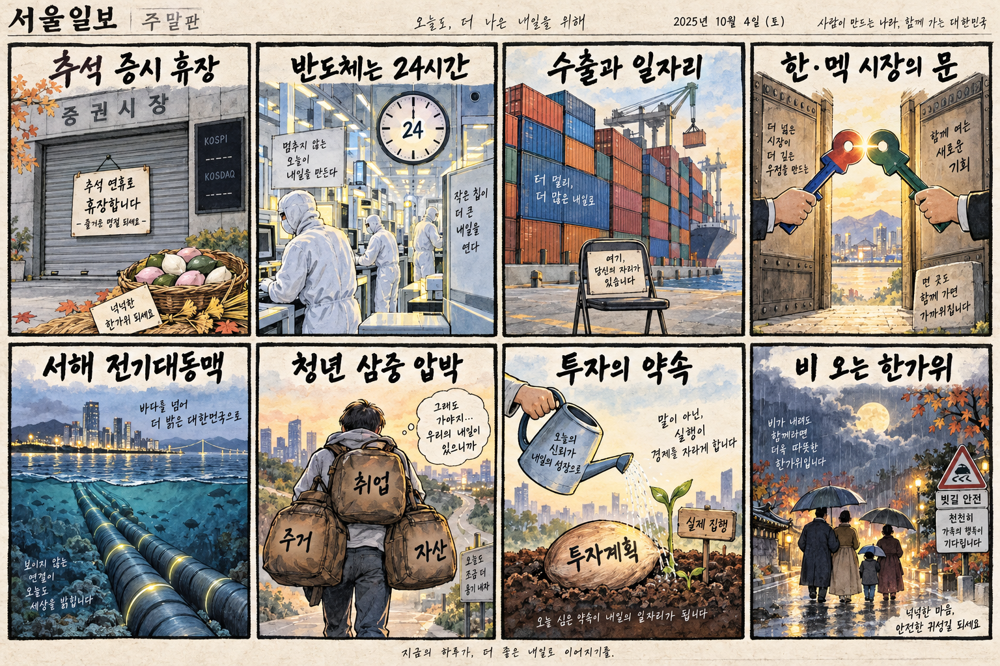

01
인텔 · 120.61→127.39달러 · +5.62%
내용요약 시가 대비 5.62% 올라 조사 종목 중 가장 강했습니다. 반도체 업종 전반의 상대강도와 함께 움직였습니다.
예상여파 국내 반도체 심리에는 우호적이지만 휴장 중 누적 변수와 재개장 갭을 고려해 추격을 피해야 합니다.
MORNING_BRIEFING_20260925
작성 시각: 2026-09-25 06:39 KST · 직전 미국 정규장과 2026-09-25 KST 당일 공개 기사 기준
직전 미국 정규장인 9월 24일 뉴욕증시는 다우 -0.31%, S&P 500 -0.02%, 나스닥 +0.01%로 보합권에서 마쳤습니다. 미 30년물 금리가 22년 만의 최고 수준으로 올랐지만 미중 관세 휴전 연장과 호르무즈 협상 기대가 낙폭을 줄였습니다. 한국 증시는 추석 휴장으로 즉시 반영되지 않으므로 재개장 때 누적된 금리·유가·미중 협상 변수를 한꺼번에 소화할 가능성에 대비합니다.
| 지수 | 종가 | 등락률 | 한국 증시 시사점 |
|---|---|---|---|
| 다우존스 | 51,349.98 | -0.31% | 지수 보합 속 금리·유가와 종목별 차별화 주목 |
| S&P 500 | 7,704.13 | -0.02% | 지수 보합 속 금리·유가와 종목별 차별화 주목 |
| 나스닥 종합 | 26,939.37 | +0.01% | 기술주 회복력은 긍정적이나 장기금리 부담 지속 |
다우 -0.31%, S&P 500 -0.02%, 나스닥 +0.01%로 혼조였습니다.
미 30년물 금리가 22년 만의 최고 수준으로 올라 밸류에이션 부담이 이어졌습니다.
추석 휴장으로 오늘 KOSPI·KOSDAQ 당일 거래와 시가 진입 기준이 없습니다.
휴장일에는 당일 시가 진입과 동일 조건 성과검증이 불가능해 공식 후보를 내지 않습니다.
9월 24일 보고서는 검증 문턱 미충족으로 공식 추천을 내지 않았습니다. 게시 당시 판단을 유지하며 사후 종목을 추가하지 않습니다.
| 시장 | 종가 | 등락률 | 기준 |
|---|---|---|---|
| KOSPI | 7,080.92 | +0.90% | 최근 거래일 9월 23일 · 오늘 추석 휴장 |
| KOSDAQ | 844.48 | +1.21% | 최근 거래일 9월 23일 · 오늘 추석 휴장 |
| 다우존스 | 51,349.98 | -0.31% | 미국 9월 24일 정규장 |
| S&P 500 | 7,704.13 | -0.02% | 미국 9월 24일 정규장 |
| 나스닥 종합 | 26,939.37 | +0.01% | 미국 9월 24일 정규장 |
인텔 +5.62%, AMD +4.74%, 마이크론 +2.93%로 시가 대비 강했습니다.
로켓랩 +5.50%, 메타 +4.47%로 조사 종목 중 상대강도가 높았습니다.
월마트가 시가 대비 -3.22%로 밀리며 소비주 부담을 드러냈습니다.
액센츄어가 시가 대비 -4.49%로 조사 종목 중 낙폭이 가장 컸습니다.
내용요약 시가 대비 5.62% 올라 조사 종목 중 가장 강했습니다. 반도체 업종 전반의 상대강도와 함께 움직였습니다.
예상여파 국내 반도체 심리에는 우호적이지만 휴장 중 누적 변수와 재개장 갭을 고려해 추격을 피해야 합니다.
내용요약 시가 대비 5.50% 상승해 우주 성장주 가운데 강한 흐름을 보였습니다.
예상여파 우주 데이터센터와 위성 투자 기대를 자극할 수 있으나 고변동 테마의 지속성은 거래량으로 확인해야 합니다.
내용요약 시가 대비 4.74% 상승하며 인공지능 칩 수요 기대를 반영했습니다.
예상여파 국내 HBM·첨단 패키징 공급망 심리에 긍정적일 수 있지만 장기금리 상승은 상단을 제한합니다.
내용요약 시가 대비 4.49% 하락해 조사 종목 중 낙폭이 가장 컸습니다. 공개 시세만으로 단일 원인을 단정하지 않습니다.
예상여파 정보기술 서비스 수요 우려가 확산되는지 동종업계 실적 전망과 후속 기업 설명을 확인해야 합니다.
내용요약 시가 대비 3.22% 하락해 대형 유통주의 약세가 두드러졌습니다.
예상여파 소비주 약세가 이어지면 경기 방어 기대와 실제 마진 압박 사이의 차별화가 커질 수 있습니다.
오늘 국내 증시는 추석으로 휴장합니다. 최근 거래일 KOSPI는 7,080.92로 전일 종가 대비 +0.90% 올랐지만 시가 대비로는 -1.02% 밀렸습니다. 미국 반도체의 상대강도와 미중 관세 휴전은 재개장 심리에 우호적이지만, 22년 만의 미 30년물 고점과 브렌트유 107달러 근접은 금리·원가 부담입니다. 재개장 전까지 추가 미국장과 환율·유가 변화를 누적해 보되 휴장 중 테마성 장외 기대를 매수 신호로 해석하지 않습니다.
오늘은 추천 없음 — 현금 관망
추석 휴장으로 당일 시가 진입 기준, 호가 유동성, 장중 수급을 확인할 수 없습니다. 따라서 종합점수 75점, 1일 상승확률 60%, 예상 손익비 1.5의 문턱을 적용할 공식 후보를 제시하지 않습니다.
관심 연결종목 반도체·광통신·전력망은 재개장 이후 상대강도 관찰 대상일 뿐 매수 추천이 아닙니다. 휴장 중 재료만 보고 재개장 갭을 추격매수하지 않습니다.
당일 시가·수급이 없으므로 신규 추천과 성과 비교를 중단합니다.
30년물의 22년 만의 고점이 기술주와 원·달러 환율에 미치는 영향을 봅니다.
브렌트유 107달러 부근의 공급 우려와 협상 진전을 함께 확인합니다.
관세 휴전 연장 뒤 반도체·희토류·인공지능 통제의 구체 조치를 봅니다.
핵심 요약: 인공지능 투자는 지상 데이터센터를 넘어 우주와 광연결로 확장되고 있습니다. 장기 클라우드 계약이 수요의 지속성을 보여주는 한편, 안전과 배포 속도를 둘러싼 산업 지도자들의 논쟁도 커지고 있습니다.
내용요약 인공지능 설비·데이터센터에 대한 미국의 누적 투자 경쟁이 철도 건설기보다 큰 산업 전환으로 번지고 있다는 당일 분석입니다.
예상여파 대규모 자본지출은 반도체·전력망·냉각·광통신 수요를 지지하지만 투자 회수 기간과 전력 비용이 기업별 수익성을 가를 수 있습니다.
내용요약 구글이 인공지능 칩을 탑재한 위성을 발사해 우주 데이터센터 개념을 궤도에서 시험한다는 당일 보도입니다.
예상여파 지상 전력·부지 제약을 우회하려는 실험이 반도체 내구성, 위성통신, 우주 냉각 기술의 신규 수요를 자극할 수 있습니다.
내용요약 PicoJool이 인공지능 데이터센터용 고속 광연결 기술 확대를 위해 2천750만달러를 조달했다는 당일 보도입니다.
예상여파 연산 칩뿐 아니라 서버 간 데이터 이동 병목을 줄이는 광인터커넥트가 차세대 데이터센터 투자의 핵심 축으로 부상할 수 있습니다.
내용요약 Akamai가 Anthropic과 7년 장기 클라우드 계약을 확대했다는 당일 보도입니다.
예상여파 생성형 인공지능 수요가 장기 인프라 계약으로 이어지면서 분산 클라우드·보안·추론 용량 확보 경쟁이 심화할 수 있습니다.
내용요약 인공지능 위험을 경고해 온 제프리 힌턴과 산업 확장을 이끄는 젠슨 황의 시각 차이를 다룬 당일 보도입니다.
예상여파 기술 확산 속도와 안전 규칙을 둘러싼 논쟁이 규제 강도, 기업 배포 일정, 연구개발 비용에 직접 영향을 줄 수 있습니다.
핵심 요약: 미중 관세 휴전 연장은 외교적 완충 장치를 만들었지만 장기금리와 유가 상승은 금융시장 부담을 키웠습니다. 우크라이나 포로 송환과 팔레스타인 유엔 연설을 둘러싼 외교 쟁점도 이어지고 있습니다.
내용요약 미국과 중국 정상이 백악관에서 만나 관세 휴전을 내년 1월까지 연장하고 협력 의제를 늘리기로 했다는 당일 보도입니다.
예상여파 단기 무역 불확실성은 완화될 수 있지만 반도체 통제·대만·인공지능 규칙의 세부 합의와 실제 후속 조치를 확인해야 합니다.
내용요약 미국 30년 만기 국채금리가 22년 만의 최고 수준으로 올랐다는 당일 보도입니다.
예상여파 장기금리 상승은 주택·기업 조달비용과 성장주 할인율을 높여 위험자산 반등의 상단을 제한할 수 있습니다.
내용요약 미국 비자를 받지 못한 팔레스타인 자치정부 수반이 유엔총회에서 영상으로 연설했다는 당일 보도입니다.
예상여파 외교적 접근 제한과 유엔 무대의 갈등은 중동 휴전·국가 인정 논의를 둘러싼 국제사회의 분열을 드러냅니다.
내용요약 우크라이나가 북한군 포로 2명의 한국행 문제는 당사국 간 직접 대화로 진행해야 한다고 밝혔다는 당일 보도입니다.
예상여파 송환 절차와 당사자 의사 확인이 외교·인도주의 쟁점으로 이어지며 한국과 우크라이나 간 협의가 중요해질 수 있습니다.
내용요약 호르무즈 해협 재개 기대에도 공급 부족 우려가 남아 브렌트유가 배럴당 107달러에 근접했다는 당일 보도입니다.
예상여파 고유가는 운송·항공·화학 원가와 물가 기대를 높여 중앙은행의 완화 여력을 줄일 수 있습니다.

핵심 요약: 한·멕시코 투자보장협정과 서해 전력망은 산업 협력의 기반을 넓힐 수 있습니다. 반면 수출과 고용의 간극, 청년의 취업 부담이 구조적 과제로 남았고 추석 당일에는 전국 비와 귀경길 안전에 유의해야 합니다.
내용요약 한국과 멕시코가 투자보장협정을 타결하고 원유 수입 협력을 이어가기로 했다는 당일 정상외교 보도입니다.
예상여파 협정의 발효와 세부 시장개방이 진행되면 자동차·방산·에너지 기업의 중남미 사업 안정성이 높아질 수 있습니다.
내용요약 추석을 맞아 청년 취업난의 원인을 인공지능만으로 돌릴 수 있는지 고용 구조와 산업 전환을 함께 짚은 당일 보도입니다.
예상여파 초급 일자리 감소와 직무 재편에 대응하려면 재교육, 채용 연계, 주거 부담 완화가 함께 작동해야 합니다.
내용요약 수출이 기록을 경신해도 고용 증가가 뒤따르지 않는 생산성·산업구조의 간극을 다룬 당일 칼럼입니다.
예상여파 수출 호조가 내수와 일자리로 확산되는지 서비스업·중소기업 고용과 실질임금 지표를 함께 살펴야 합니다.
내용요약 서해 해저에 14조원 규모의 대용량 전력망을 구축하는 사업이 추진된다는 당일 보도입니다.
예상여파 재생에너지와 산업단지를 잇는 송전망 확충은 전력 병목을 줄일 수 있지만 공사 일정·비용·주민 수용성이 관건입니다.
내용요약 추석 당일 전국이 흐리고 곳곳에 약한 비가 내려 보름달 관측이 어려울 수 있다는 당일 예보입니다.
예상여파 성묘·귀경길에는 젖은 노면과 가시거리 저하에 대비하고 지역별 강수 시간과 교통 정보를 확인해야 합니다.
